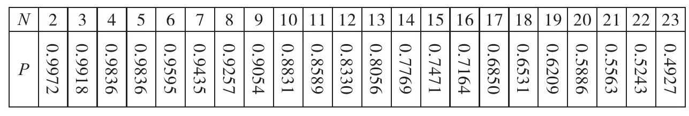
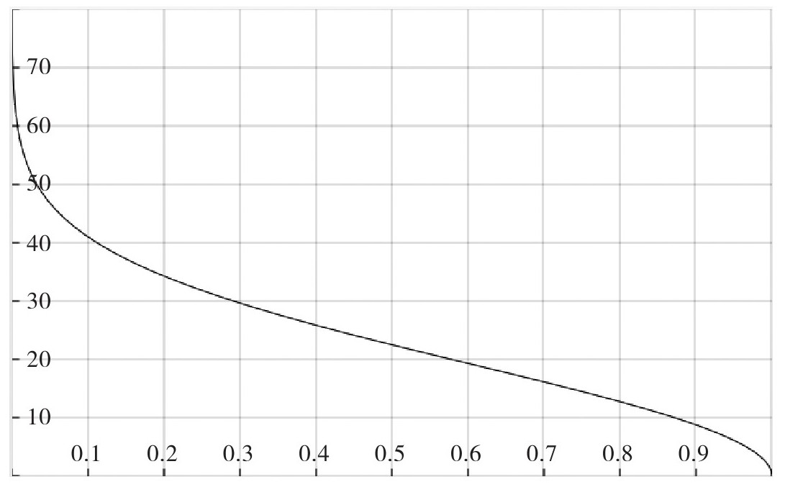
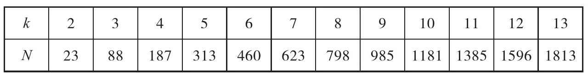
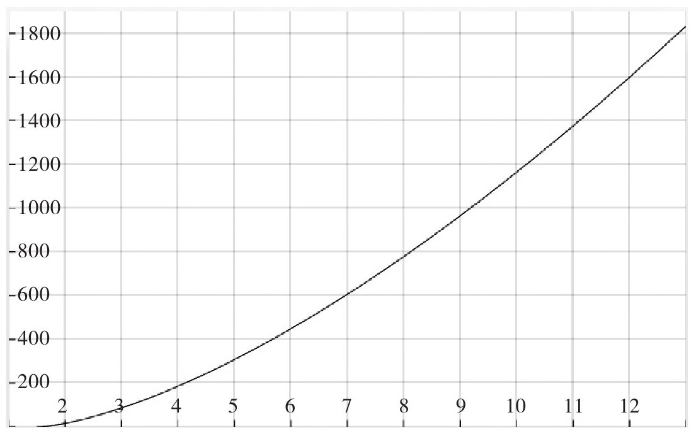
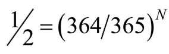
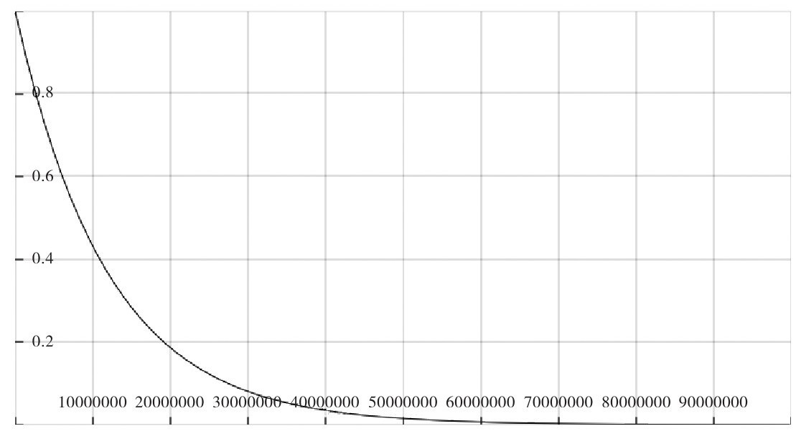
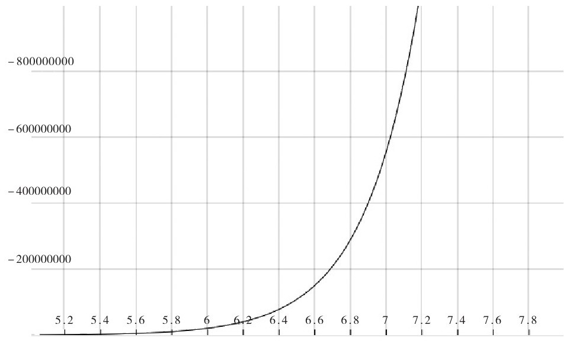

——亚瑟·艾丁顿将军《吉福德演讲集》
我们经常被大千世界欺骗，它比我们想象的要大，又比我们想象的要小。一百年以前我们大都待在村镇附近，我波兰的伯父伯母无疑一辈子都没走出过他们的犹太人小村庄。今天，由于交通便利，我们经常与亲戚朋友撞个满怀也毫不惊奇。我们可以15个小时之内从纽约飞到香港，但这可能还不足以使我们完全洞察世界之大。可若我问你，在你阅读这段文字时世界上有多少人自杀，你可能会说0。但为了了解世界有多大，让我来告诉你。根据世界卫生组织的估测，平均每40秒就有人在这世界上的某一个地方上演一幕自杀，即平均每天2160人！国家不同数字也不一样。在印度自杀非法，但自杀率几乎是全球平均水平的两倍。
按照定义，巧合是无明显原因而发生的事件。对谁而言原因明显？这并不意味着事出无因。我们的世界通常以因果而运行。我说“通常”，这是因为在物理、心理学和宗教中都存在非因果关系现象。但“明显”这个词告诉我们，我们一旦知道了偶然现象发生的原因，该事件就变成了简单的时间空间事件。这就表明巧合与受其影响的人们有关。同时也意味着这个不明显的原因仍有待于发现。若事件的发生根本没有原因，那么事件就是偶然发生的。
从一副普通的洗好的52张扑克牌中抽出一个黑桃A的赔率是51：1。抽出任意花色A的赔率是12：1。这只是意味着在抽取13张扑克牌中，您抽到任何花色A的可能性很大，但实际结果如何是概率问题。
你连续两次抽到黑桃A的概率——抽到A后放回牌中，接着再次抽到A——为1/2704。但是假设你抽到黑桃A后，把它放回牌中再抽。你抽到相同牌的概率仍然是1/52，尽管前面开始说的是1/2704。要再次抽到黑桃A，必须发生两件事情，每件事的概率都为1/52。因此你的概率是1/52×1/52=1/2704。这看似矛盾，因为第二次不会比第一次难。
即使概率很低，再次抽到黑桃A仍然是可能的，根据经验，我们知道这种情况经常发生。你可以下注一美元赌你能连续两次抽到黑桃A，但是不要孤注一掷。最明智的做法是以不少于2703：1的回报下注一美元打赌两次抽到黑桃A，那样的话，倘若你有几千美金，你就可以玩几千次。哈哈！结果将是非常有可能至少赢一次。
当然，连续3次或4次抽到黑桃A的概率非常非常小。4次抽到黑桃A的概率是1/52×1/52×1/52×1/52，即1/7311616。不太可能但也不是不可能。这种情况下一美元都不要押。事实上，连续50次，或连续100次，或连续任何更多次抽到同一张A也不是不可能。
如果你连续4次抽到黑桃A，你也许会怀疑这副牌有问题。但概率很有趣。概率法则中没有任何规定能阻止黑桃A连续四次跳出来，正如我们没有办法阻止朝空中抛音符，音符落地后组成贝多芬鸣奏曲一事一样。你不会打赌往空中抛音符你就能写出像莫扎特一样的音乐。但肯定有可能通过往空中不停地抛音符而产生一首合理的鸣奏曲。
假设你正与其他十个玩家玩扑克牌。抽到梅花同花顺（如A♣K♣Q♣J♣10♣）的赔率是2598959:1。为什么呢？因为抽第一张牌有52种可能，第二张牌有51种，第三张有50种，第四张有49种，最后一张有48种。因此抽到上面5张牌的可能为（52×51×50×49×48）。可是这个数字太庞大了。假定发牌按某种特定的顺序，会用什么样的顺序呢？这无所谓。你可能第一张、第二张、第三张、第四张或最后第五张牌抽到A。当第一张抽到A时，K剩下4次机会，Q剩下3次，J剩下2次，10剩下一次机会。因此，为了计算出发牌方法，我们必须用52×51×50×49×48除以5×4×3×2×1，得到2598960。这就意味着有2598959次可能性“不”按A♣K♣Q♣J♣10♣这个顺序发牌，1次可能性按这种方式发牌。但抽到其他牌的概率也是如此。所有人都认为3♠6♥8♣J♦Q♠是无用的牌，抽到这种无用的牌的概率也是1:2598959。这样想想：“你”抽到A♣K♣Q♣J♣10♣牌的赔率要比其他任何人抽到同一手牌的赔率小得多。
生日问题
至少有两种数学模型给我们提供了评估巧合的正确方法。一个是生日问题，它告诉我们，在任何23人为一组的组中，同一组中两人同一天生日的概率为50%。另一个是猴子问题：如果给予猴子足够的时间随机敲击键盘，它能否敲出莎士比亚十四行诗的第一行？
关于生日问题的讨论在网络和数学书中四处可见，也是课堂上探讨最多的话题之一，所以看起来这个问题好像讨论过多了。但是它也是我们思考巧合的模型，并且也许是我们目前最好的模型。
也许我们应该把它看作是一个巧合问题，毕竟我们讨论的是A和B同时出现在一大组的可能性。我们可能会问，这个组应该多大才能让A和B同时发生的概率超过50%？这个问题也可以概括为如何理解概率法则违背直觉。问题可标准表述为：在一组随机挑选的N人中，N应该多大才能使小组中两个人同一天生日的可能性大于50%？答案是N=23，这个数字小到令人意想不到。
计算出N并不难。假设P（N）表示N个人不在同一天生日的概率。首先假设N=2，那么P（2）=365/365×364/365，因为两个人中的任何一人的生日可以是365天中的任何一天，去除另一人的生日。P（2）非常接近1。这个结果并不意外。假设N=3。与N=2类似，第三个人不能与另外两人同一天生日，所以P（3）=365/365×364/365×363/365。计算器很容易计算出结果。这样继续算下去，我们可以看到随着N的增加，P（N）减小。最后N=23，计算结果如下：
P（23）=365/365×364/365×363/365×……×343/365=（1/365）23×（365×364×363×……×343）=0.4927
表8.1和图8.1显示，P（23）（23人中没有2人同一天生日的概率）等于0.4927。反之可以推算出，一组23人中两个人同一天生日的概率是0.5073，超过50%。
表8.1


图8.1 同组中无两人同一天生日的概率随同组人数的变化曲线
即使设计如此周密的问题，仍旧有假设影响答案。有的小假设忽略闰年。有的大假设忽视一个事实，即：生日并不像我们认为的那样随机分布在全年。我们知道生日倾向于聚集在一块，这可能与假期、自然灾害、季节和其他难以理解的失衡有关。
还有一些奇怪的地方。为了使一组中有3个人同一天生日的概率超过50%，你可能会想这个组的人数可能会接近23的2倍。正确的数字是88。4个人同一天生日的小组人数是187。[86]表8.2和图8.2显示了数据是如何增长的，其中k代表一组中同一天生日的人数。
表8.2[87]


图8.2 [88]k人同一天生日的概率超过50%的小组人数
标准生日问题最初由应用数学家理查德·冯·米塞斯提出。他出生于西班牙的加利西亚，1933年离开柏林，到伊斯坦布尔大学任职。他在流体力学、空气动力学和概率论方面作出了极大的贡献。他于1939年到美国哈佛任职。[89]
这个问题有很大的欺骗性。从某个角度看，这是一个组合数学问题。我们甚至可以把它看作是一个抛骰子的问题。就好比你扔一个有365个面的骰子23次，求同一个面着地两次的概率。这是一个假设的想象实验，因为不存在365个面的骰子。但换个角度看这个问题，将每一天编号，然后随机编排。或者可以将数字1到365打印在塑料片上，放入一个旋转的笼子里，随机抓N次，一次一个，然后放回。问：挑选N次后，两次抽到同一数字的概率P（N）是多少？[90]
如果我们换一个问题：问在一次全国性会议上有多少人的社会保险号最后4位数字相同？这是一个类似的问题。唯一的区别在于365换成了9999，假设没有人的社会保险号最后四位是0000。如果这样，在118位与会者中，其中两人的社会保险号最后4位数字相同的概率超过50%。[91]最后4位数字没有实际意义，而且或多或少与人的出生日期没有关联。
正当我开始写这本书时，一位名叫艾格尼丝的线上杂志特邀作家，不知怎么得知我在写一本关于巧合的书。“亲爱的马祖尔教授，请原谅我这样一个奇怪的请求，”她在给我的一封电子邮件中写道，“遇到和你同月同日出生（不是出生日）的人（真正见面遇到，而不是在线搜索）的概率有多大？我遇到过两次，很有意思的是，两次都是在我生命中重要的时刻。”
在那之前我从来没有想过她说的这个复杂的问题。然而仔细考虑后，我很快发现，这个分析告诉了我们几乎所有巧合的基本数学应用。艾格尼丝并没有问一个小组中任意两个人同一天生日的概率，相反，她只想知道在一个小组中她自己与别人同月同日出生的概率。这个问题更难回答。为了区别，我们把她的问题叫作生日配对问题。
如何解答这个问题呢？我们不再谈论365天，而是成千上万天。这里的变量是什么？她的问题不是任意两人的生日相同，而是她的生日恰好与她的某个熟人相同。更难的是，不只是她认识的人与她生日相同，而是恰巧碰到别人，然后发现他们同一天生日。
如果艾格尼丝只对某人与她同一天生日的概率感兴趣，那这个问题很好解决。假定她的生日是7月1日。她真正的生日是哪一天并不重要。只要确定某个日期，或者换句话，把这个问题陈述出来，即求房间内某人生日在某一天的概率。生日不是7月1日的熟人的概率是364/365。艾格尼丝N个生日不是7月1日的熟人的概率为（364/365）N。所以，要计算出N个不和她同一天生日的熟人超过50%的概率，我们必须解方程

，得出N=252.65。[92]因此，艾格尼丝有超过50%的可能与253个熟人中的某一位同一天生日。但这仍是一个生日问题，而不是生日配对问题。艾格尼丝的问题更加深奥。艾格尼丝的巧合涉及她的出生年月日。为了简单起见，让我们假定她的大部分熟人年龄与她相差10岁左右，即相差±3650天。为了超过一半概率碰到和她同月同日生的人，她必须遇到超过5105个熟人。[93]这似乎要见很多人。作为一个活跃的职业女性，她5年内肯定能遇到5105个熟人，平均每天不超过3个人。但为了讨论方便，我们把概率缩小。如果我们只希望概率为10%，那么只需要见面770次。这样问题就变成：她5年内能遇到多少个不同生日的熟人？此外，艾格尼丝至少需要遇到770个熟人，并且其中有1人与她同月同日生。假设她五年内遇到N＞770个不同的人，而且其中有些谈话的话题涉及生日。评估这个问题的难度不在于770个人中有1人是她的生日配对者，而是她碰巧遇到对方，通过不经意的谈话，偶然发现对方是她的生日配对者。这种事件的概率是多少呢？回答这个问题的难度在于估算她平时谈话涉及生日话题的频率有多高。假设10年内，每100次谈话中平均有1次生日话题。因此我们必须将熟人数量乘以100。换句话说，如果碰到1个熟人和她同月同日生的概率为10%，她需要遇到77000个熟人。如果遇到一个生日配对者概率要超过50%，她将必须遇到510500个熟人。但艾格尼丝告诉我们她遇到了两次！并且这两个人并非一般的熟人。第一次是为她接生的助产士，作为例行公事，对方要求她提供她的出生日期。第二次发生在十几年后，当时她正乘坐机场巴士前往纽瓦克机场接她的父母。谈话中她告诉司机，她父母过来是为了庆祝她50岁生日。“为了将问题更推进一步，”她后来写道，“这两人都是我以前从未遇到的专业人士，他们也不属于我有必要认识的人，年龄与我也不相仿。”
因此无论如何，我们必须承认，她这两次偶遇确实不可思议。
生日问题的计算方法同样适用于忌日。有一个真实的事件：三位总统约翰·亚当斯、托马斯·杰斐逊和詹姆斯·门罗都逝世于7月4日。是的，约翰·亚当斯和托马斯·杰斐逊去世于同一年，即1826年。这似乎有点令人毛骨悚然。然而，对他们来说7月4日是一个重要的里程碑。我们知道，个人的求生或求死的意志和意愿可以让死亡提前或推迟几小时或几天。因此也许这些早期的总统只是锁定了7月4日死亡，尤其是亚当斯和杰斐逊坚守那一天就是为了见证《独立宣言》签署五十周年纪念日。所以这种任意性是有原因的，这不是巧合。
猴子把戏
猴子问题作为概率论中统计力学问题最早见于埃米尔·波莱尔1913年发表的文章“统计力学的不可逆性”（Mécanique Statistique et Irréversibilité）。该问题告诉我们，如果给予猴子足够的时间，让它随机敲击键盘，它可以敲出完整的莎士比亚著作。当然，足够的时间可能意味着无限的时间。英国物理学家阿瑟·艾丁顿爵士对随机性态度要宽容得多。1927年，他受邀在爱丁堡大学做吉福德讲座（Gifford Lecture：自1888年起，爱丁堡大学每年都邀请世界知名学者做吉福德讲座）时说：“如果我的手指随意在打字机键盘上敲打，打字机屏幕上可能就会出现一个可理解的句子。如果一群猴子在打字机键盘上胡乱拨弄，它们可能会敲打出大英博物馆里所有的书。”现在让我们把事情简单化。我们不期望它们敲出大英博物馆所有的书，我们不期望它敲出莎翁的完整作品，也不期望一首十四行诗，只要它敲出一行诗句“shall I compare thee to a summers day（我应把你比作夏日）”。如果猴子能按照如下顺序敲出这些字母：s-h-a-l-l-i-c-o-m-p-a-r-e-t-h-e-e-t-o-a-s-u-m-m-e-r-s-d-a-y，我们会认为这是一个很大的巧合。这个可能性有多大？可能性真的很小！假设键盘只限于小写英文字母，猴子敲出“shall”的首字母的概率为1/26。因为敲击一个键与另一个键无关[94]，猴子敲出前5个字母的概率为1/（26×26×26×26×26）=1/11881376，但这是猴子第一次敲出前5个字母的概率。它应该有不止一次机会，应该说有很多的机会。想想猴子第一次敲不出前5个字母的概率。计算公式为：1-（1/26）5≈0.99999991583，接近于1。敲N次，还是没有敲出正确字母的概率为[1-（1/26）5]N。
当N=8235542时，猴子敲出莎士比亚著名的十四行诗的第一个单词的概率超过50%。图8.3显示敲击大约50000000次后都没有敲出“shall”的概率几乎为0。

图8.3 敲击N次后没有敲出前5个字母的概率图[95]
将这个算法应用到密码保护上。它告诉我们，通过计算机程序随机检测字母，可以轻而易举地破解由5个字符组成的密码。现在即使是运行缓慢的中央处理器都能在10秒内运行50000000次。但如果你的密码多加一个字符，破解该密码的概率要超过50%则要在214124096次尝试之后。密码每增加一个字符包括混合字母，数字和符号或改变大小写，其破解难度呈指数增长。参见图8.4。

图8.4 破解N字符密码概率超过50%的尝试次数
随机键入π的前6位数的概率是0.000001，即百万分之一。如果每只猴子都有1000次机会敲出π的前6位数，1000只猴子中有一只猴子敲出π的前6位数的概率将超过50%，也许π根本不是一个特殊的数字，当然我们只是选取了π的前6位数。以π的前100位数为例。直到时光流尽，猴子随机选择数字写出π的前百位数的概率几乎为零。埃米尔·波雷尔曾在1913年就要我们设想了这样的一个情景：一百万只猴子一天10个小时随机敲击键盘。[96]
詹姆斯·琼斯将军在《神秘的宇宙》中写道：[97]
一群虚拟猴子模拟了猴子问题。2004年8月4日，计算机模拟猴子随机敲击键盘长达421625000000亿年后，敲出如下字符：“VALENTINE.Cease toIdor：eFLP0FRjWK78aXzVOwm）-；8t……，”[98]出乎意料的是，这串乱码的前19个字符恰恰是莎士比亚戏剧《维洛那二绅士》第一行的前19个字符：VALENTINE：Cease to persuade, my loving Proteus（瓦伦丁：不用劝我，亲爱的普罗提斯）。
这一行字符前面9个字母都是大写，想必“大写锁定键”碰巧在某个短暂的时间内是打开的吧。当然，42×1018万的5次幂是一个超级庞大的数字，但仅仅因为耗费大量时间，才按照特定顺序敲出这19个字符，并不意味着这19个字符不可能在更短时间内就完成。不可否认，第一次敲击就可能出现这一不可思议的巧合，但这不是不可能。意外的事情可能会发生，并且确实发生了。以DNA匹配为例，世界上是否存在两个不相干的人DNA完全匹配？这种概率极低，但不是不可能。实际上这个概率是十亿分之一。